Panduan lengkap step-by-step: daftar, masuk, memahami dashboard & eligibility, perhitungan skema PKS Baru/Adendum PKS Lama, mengajukan penyetaraan, sampai proses verifikasi oleh admin — untuk mahasiswa S1 Ilmu Aktuaria & S1 Matematika, Departemen Matematika UB.
Sistem ini dipakai mahasiswa S1 Ilmu Aktuaria dan S1 Matematika (Departemen Matematika UB) untuk menyetarakan matkul yang sudah lulus ke tujuh Modul PAI level ASAI (A10–A70). Sistem otomatis menghitung apakah mahasiswa eligible (lolos syarat) untuk tiap modul berdasarkan nilai yang sudah diinput admin, lalu mahasiswa mengajukan, dan admin yang akan menyetujui atau menolak setiap pengajuan satu per satu per modul.
| Modul | Nama | Kode resmi ASAI | Persentil (PKS Baru) |
|---|---|---|---|
| A10 | Matematika Keuangan | CF1 | 80 |
| A20 | Probabilita & Statistika | CF2 | 90 |
| A30 | Ekonomi | CF3 | 80 |
| A40 | Akuntansi | CF4 | 80 |
| A50 | Metoda Statistika | TA1 | 80 |
| A60 | Matematika Aktuaria | TA3 | 80 |
| A70 | Pemodelan & Teori Risiko | TA2 | 90 |
Kalau belum punya akun, mulai dari halaman utama lalu klik Daftar di sini, atau langsung buka halaman Register.
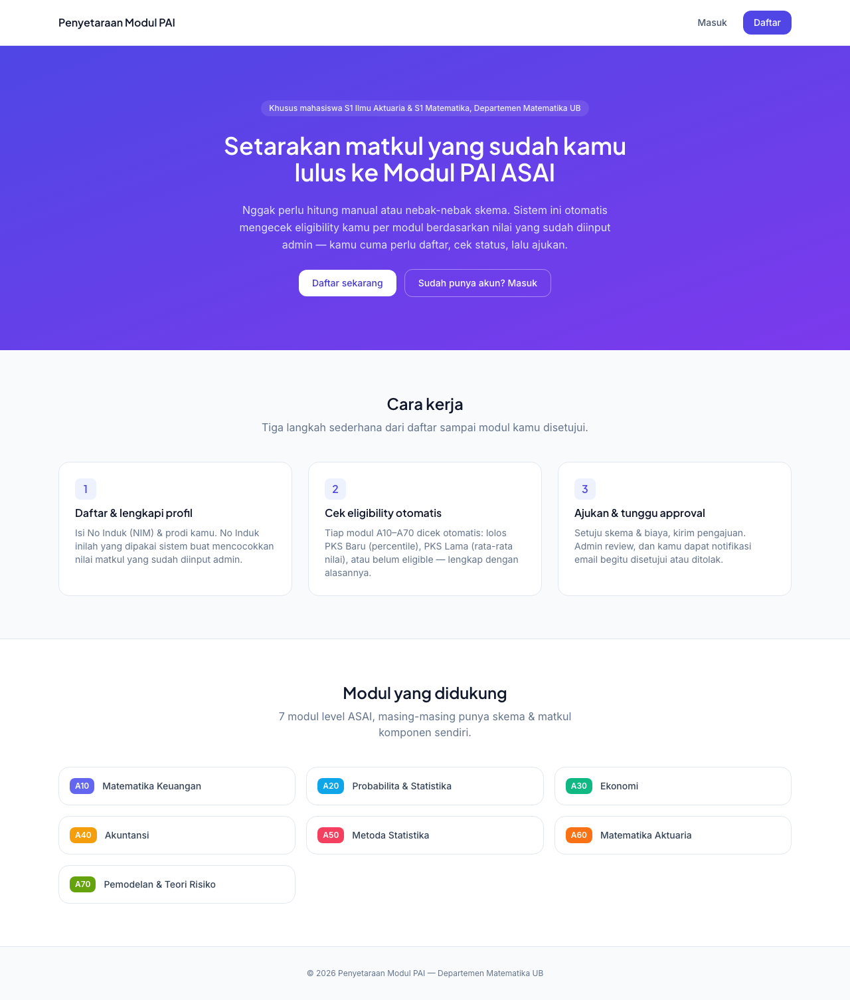
Isi Name (nama lengkap), Email aktif, dan Password + konfirmasinya.
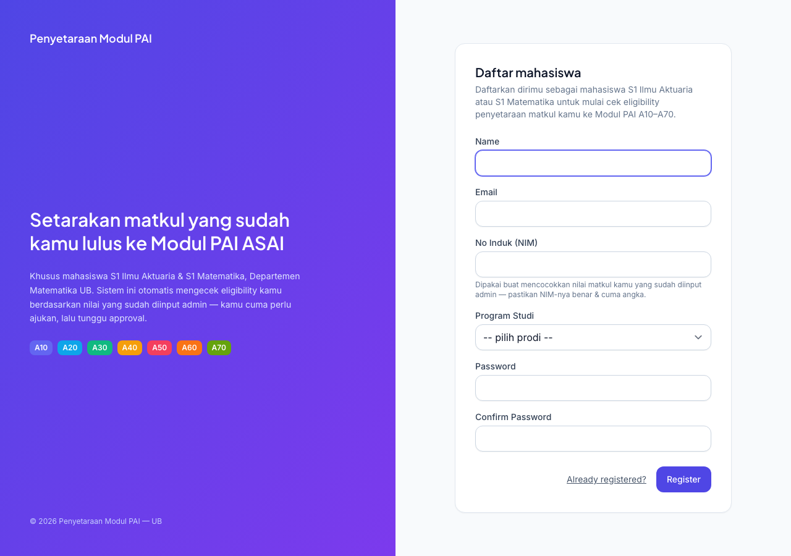
Field ini paling krusial di seluruh sistem: No Induk dipakai untuk mencocokkan data Anda ke data nilai matkul yang sudah diimport admin sebelumnya. Apabila NIM salah ketik atau berbeda dari yang dipakai admin saat mengimport nilai, dashboard akan menganggap Anda belum eligible untuk semua modul — bukan karena nilai Anda kurang, tapi karena sistem tidak menemukan data nilai atas NIM itu. Pilih juga Program Studi (S1 Ilmu Aktuaria / S1 Matematika).
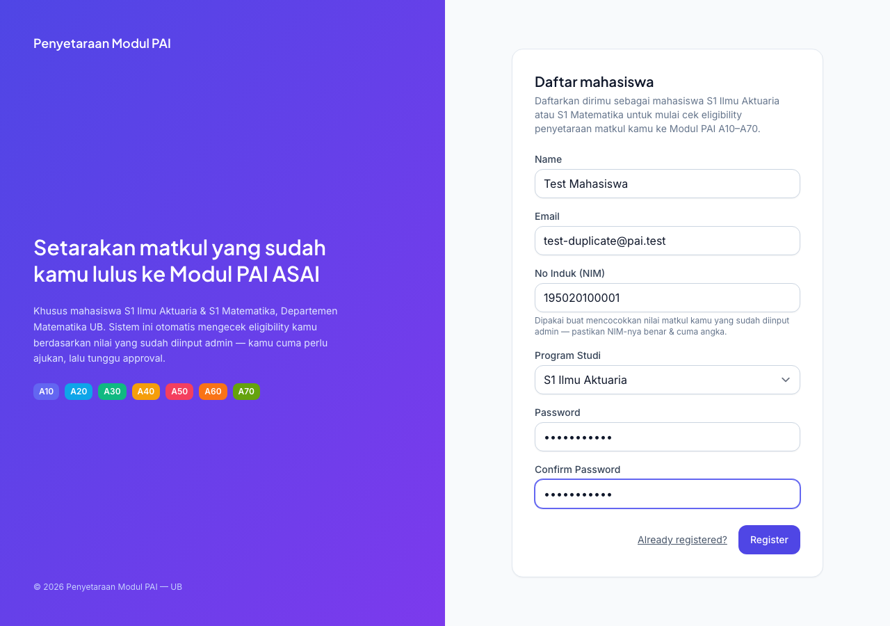
Sistem menolak No Induk yang sudah terdaftar sebelumnya (satu NIM = satu akun), email yang sudah dipakai, atau password yang tidak memenuhi syarat keamanan minimum. Contoh di bawah: mendaftar dengan NIM yang sudah dipakai mahasiswa lain akan menampilkan pesan error tepat di bawah field-nya, dan akun tidak dibuat sampai semua isian valid.
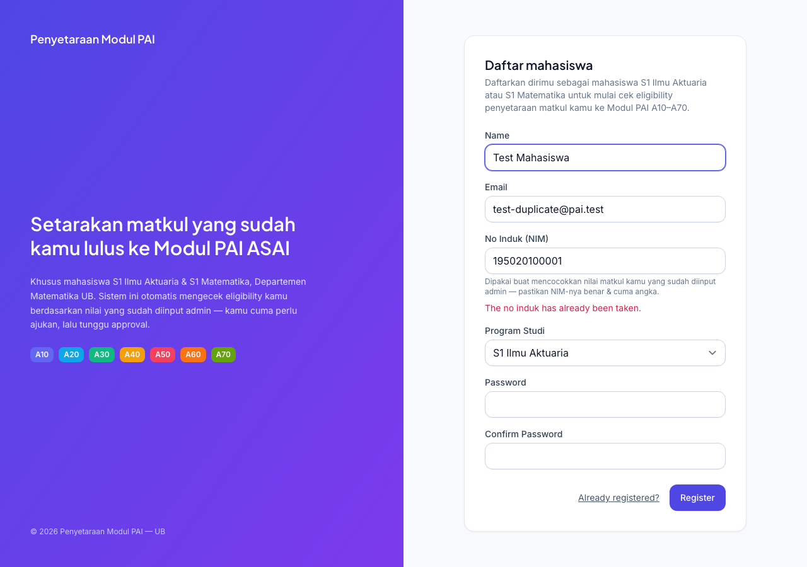
Setelah semua field valid, klik Register. Anda akan otomatis ter-login dan langsung diarahkan ke Dashboard — tidak perlu verifikasi email tambahan.
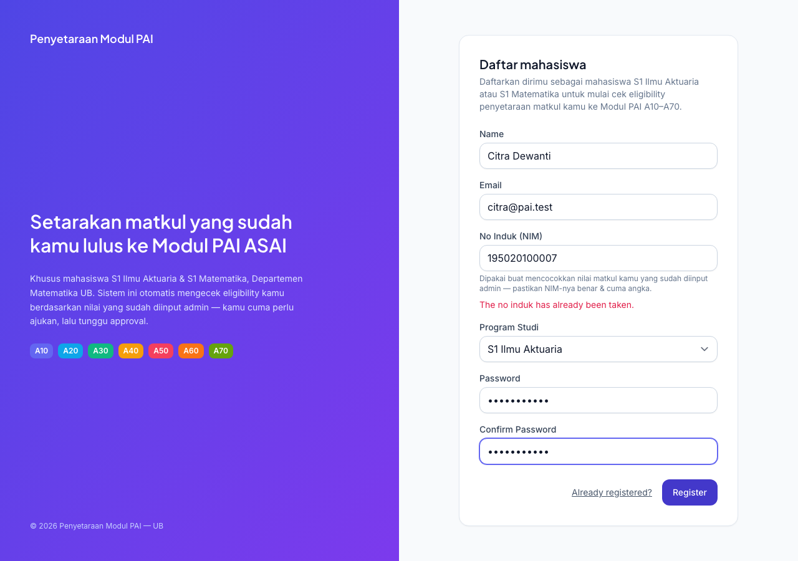
Kalau sudah punya akun, masuk lewat halaman Login menggunakan email & password yang dipakai saat daftar. Halaman ini juga yang dipakai admin untuk masuk (sistem akan otomatis mengarahkan ke dashboard mahasiswa atau dashboard admin sesuai peran akun Anda).
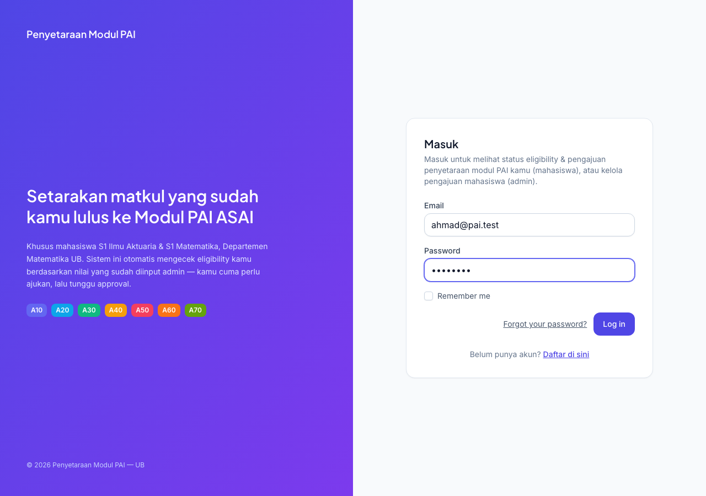
Dashboard adalah halaman utama mahasiswa: di sini Anda dapat melihat status eligibility tiap modul A10–A70, secara otomatis dihitung dari nilai yang sudah diinput admin.
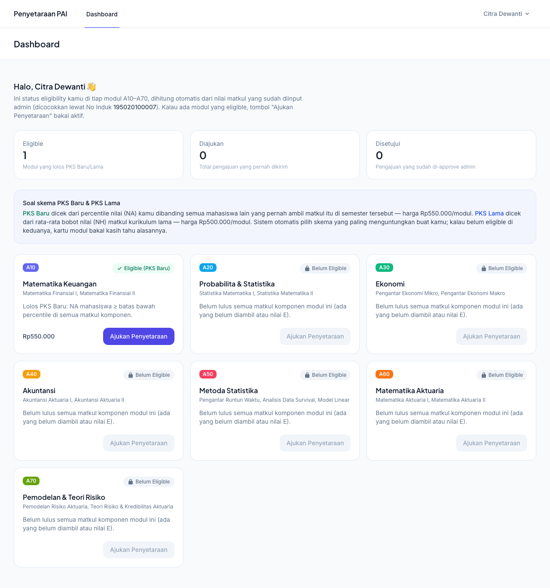
Tiap kartu modul punya bagian yang sama, hanya isinya yang berubah sesuai hasil perhitungan eligibility Anda:
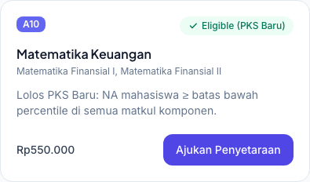
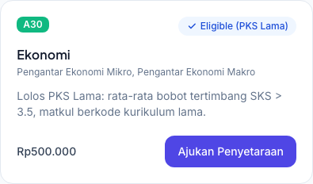
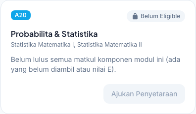
Tiap kartu menampilkan: chip kode modul berwarna (kiri atas, warnanya khas per modul A10–A70), badge status (kanan atas), nama modul + daftar matkul komponennya, kalimat alasan singkat dari sistem, harga skema, dan tombol aksi di kanan bawah.
Setelah pengajuan dikirimkan, badge berganti jadi status pengajuan:
Ini bagian paling penting untuk dipahami: bagaimana sebenarnya sistem memutuskan apakah Anda eligible atau tidak, lewat skema apa, dan kenapa.
Setiap modul punya beberapa matkul komponen (lihat tabel di bagian 1). Sebelum skema apapun dihitung, Anda harus sudah lulus SEMUA matkul komponen modul itu — tidak boleh ada yang belum diambil atau nilainya E.
Untuk setiap matkul komponen, sistem menghitung batas bawah dari
kumpulan nilai NA semua mahasiswa yang pernah mengambil matkul itu (di semua semester),
menggunakan rumus statistik PERCENTILE.INC:
P ini berbeda-beda per modul (lihat kolom Persentil di tabel
bagian 1) — bukan satu angka yang sama untuk semua modul. Anda dinyatakan
eligible PKS Baru untuk modul M apabila nilai NA Anda
≥ batas bawah itu, di SEMUA matkul komponen M sekaligus (bukan rata-rata —
tiap matkul punya batasnya sendiri dan harus lolos semua).
| Matkul | Batas bawah (persentil) | NA mahasiswa | Status |
|---|---|---|---|
| Matematika Finansial I | 91,0 | 95 | ✓ lolos |
| Matematika Finansial II | 91,0 | 97 | ✓ lolos |
Angka yang sama persis tampil di kolom "NA" pada tabel rincian halaman pengajuan:
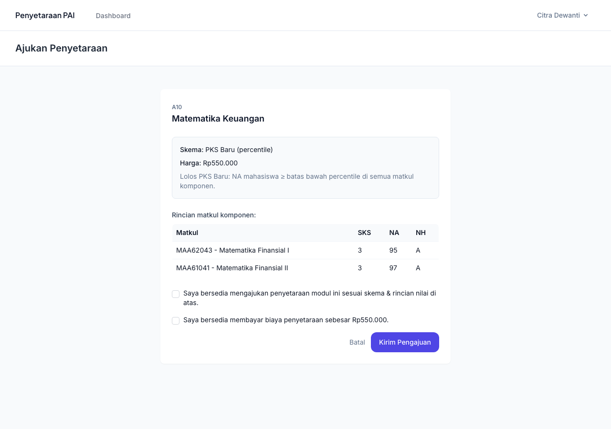
Nilai huruf (NH) tiap matkul dikonversi ke bobot menurut skala UB:
| NH | A | B+ | B | C+ | C | D+ | D | E |
|---|---|---|---|---|---|---|---|---|
| Bobot | 4.0 | 3.5 | 3.0 | 2.5 | 2.0 | 1.5 | 1.0 | 0.0 |
Lalu dihitung rata-rata bobot tertimbang SKS dari semua matkul komponen modul:
Anda eligible Adendum PKS Lama apabila hasilnya lebih besar dari 3.5 (harus strictly greater — pas 3.5 sendiri dianggap GAGAL, bukan lolos).
| Matkul | NH | Bobot | SKS | Bobot × SKS |
|---|---|---|---|---|
| Pengantar Ekonomi Mikro | A | 4.0 | 3 | 12.0 |
| Pengantar Ekonomi Makro | B+ | 3.5 | 3 | 10.5 |
Angka yang sama persis tampil di kolom "NH" pada tabel rincian halaman pengajuan:
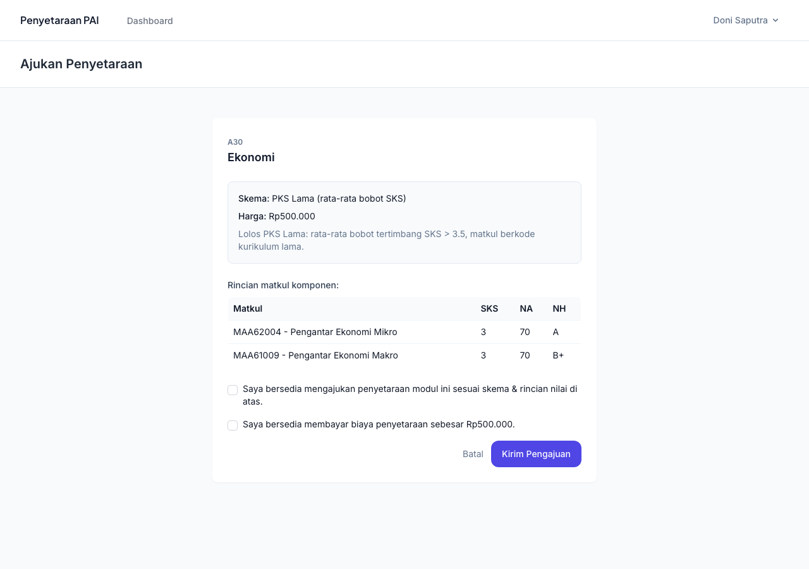
| Matkul | NH | Bobot | SKS | Bobot × SKS |
|---|---|---|---|---|
| Matkul 1 | B+ | 3.5 | 3 | 10.5 |
| Matkul 2 | B+ | 3.5 | 3 | 10.5 |
Apabila Anda lolos kedua skema, atau lolos salah satunya saja, sistem mengecek dengan urutan tetap berikut, langkah demi langkah dari atas ke bawah. Begitu satu langkah sudah menghasilkan keputusan, proses berhenti di situ — tidak lanjut ke langkah berikutnya.
Adendum PKS Lama — Rp500.000 / modul
Harga ini sudah otomatis muncul di form pengajuan sesuai skema yang berlaku untuk Anda — Anda tidak perlu menghitung sendiri.
Begitu sebuah kartu modul menunjukkan badge Eligible (PKS Baru) atau Eligible (Adendum PKS Lama), tombol "Ajukan Penyetaraan" di kartu itu akan aktif.
Anda akan dibawa ke halaman form persetujuan, lengkap dengan rincian yang menentukan keputusan skema Anda — supaya Anda mengetahui alasan di balik nilainya, bukan sekadar diberi tahu hasilnya.
Halaman ini menampilkan: nama & kode modul, skema yang berlaku (PKS Baru/Lama), harga, kalimat alasan dari sistem, dan tabel rincian matkul komponen (kode, nama, SKS, NA, NH) yang dipakai sebagai dasar keputusan. Contoh skema PKS Baru (kiri) dan Adendum PKS Lama (kanan):
Anda harus mencentang kedua checkbox sebelum bisa mengirim:
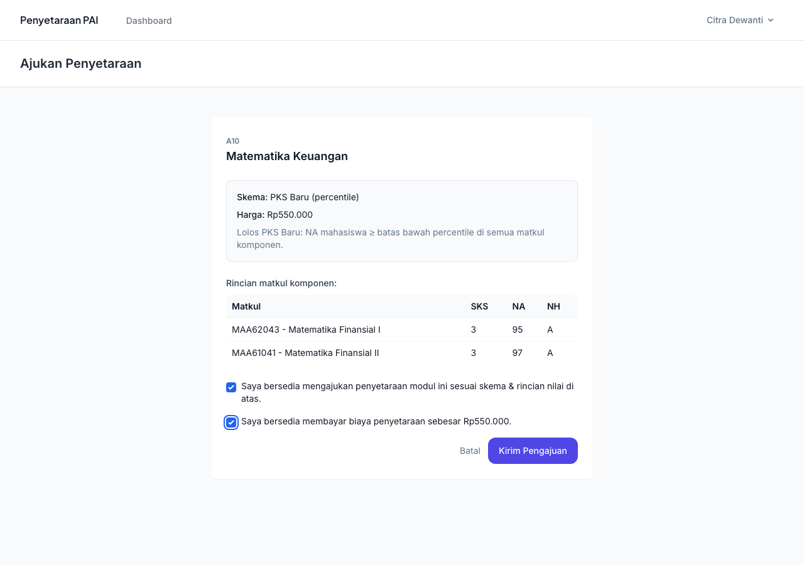
Pengajuan langsung berstatus Menunggu review dan Anda dikembalikan ke dashboard dengan pesan konfirmasi hijau di atas. Kartu modul yang diajukan otomatis berubah: badge jadi "Menunggu review" dan tombol berubah jadi "Sudah diajukan" (terkunci, tidak bisa diajukan dobel selama masih pending/disetujui).
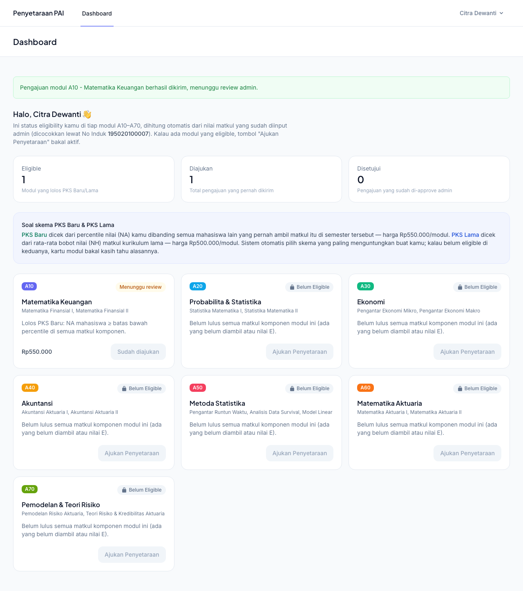
Setelah mengajukan, Anda bisa kembali ke dashboard kapan saja untuk memantau status tiap modul lewat badge di kartunya:
Login sebagai mahasiswa lain yang sudah pernah disetujui akan terlihat seperti ini — perhatikan badge hijau "Disetujui" dan tombol yang sudah terkunci:
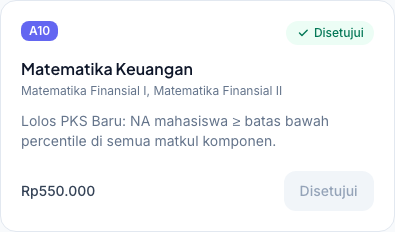
Setelah Anda mengirim pengajuan, prosesnya berpindah ke sisi admin. Berikut yang terjadi di balik layar (berguna supaya Anda mengetahui apa yang sedang ditunggu):
Admin masuk lewat halaman login yang sama, lalu melihat dashboard per mahasiswa (bukan per modul) berisi rekap jumlah pengajuan yang disetujui/pending/ditolak untuk tiap mahasiswa.
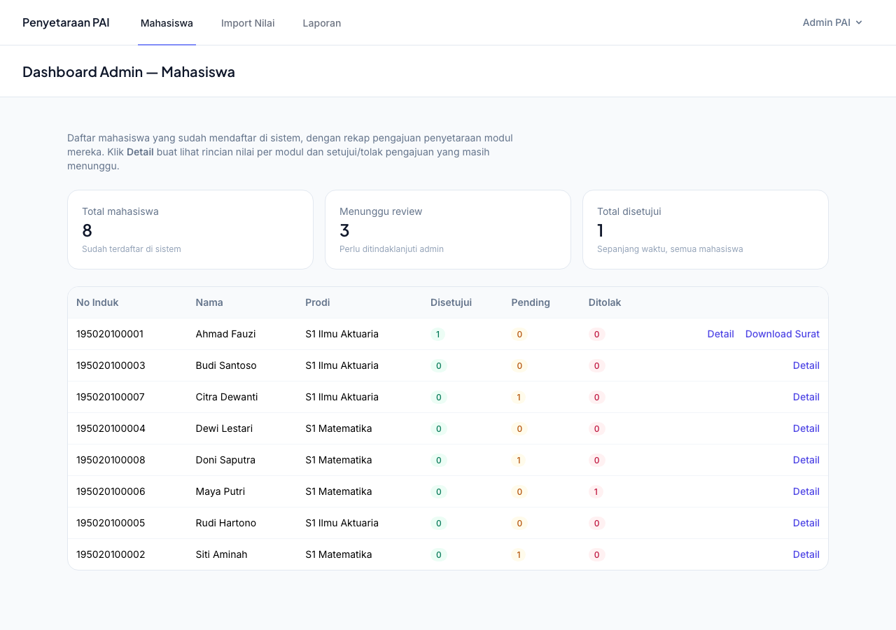
Klik "Detail" pada nama mahasiswa menampilkan setiap modul yang diajukan, lengkap dengan rincian nilai komponen yang sama persis seperti yang Anda lihat saat mengajukan (jadi tidak ada informasi tersembunyi) — skema, harga, dan tabel matkul.
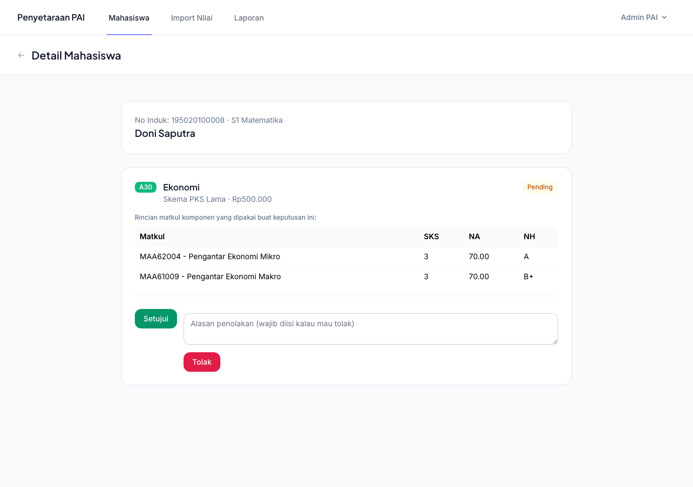
Klik tombol "Setujui" langsung mengubah status modul itu jadi Disetujui, mencatat admin & waktu reviewnya, dan memicu email notifikasi otomatis.
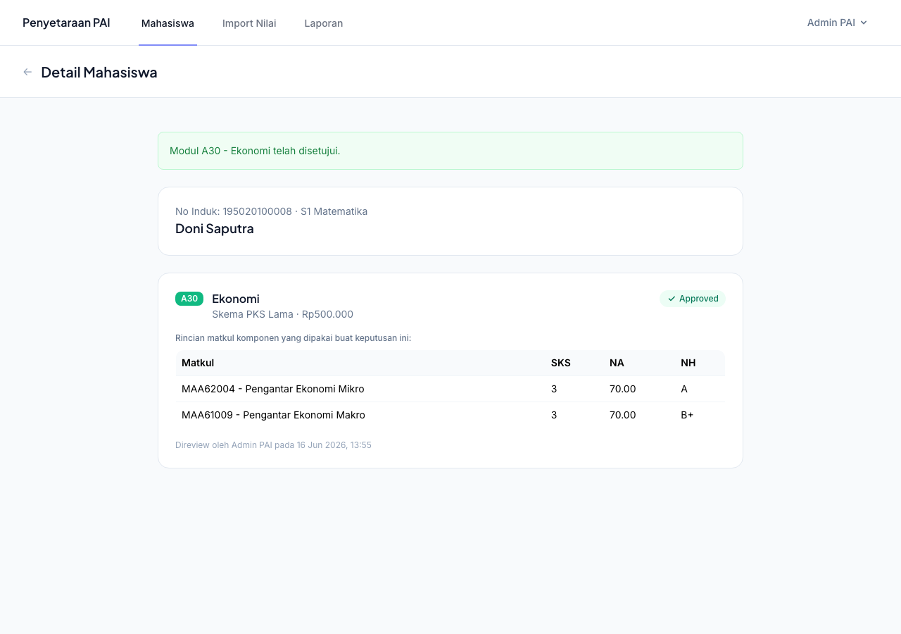
Kalau ada masalah (misalnya bukti bayar belum diterima, data tidak cocok, dll), admin mengisi alasan penolakan di kotak teks (wajib diisi, tidak bisa dikosongkan) lalu klik "Tolak".
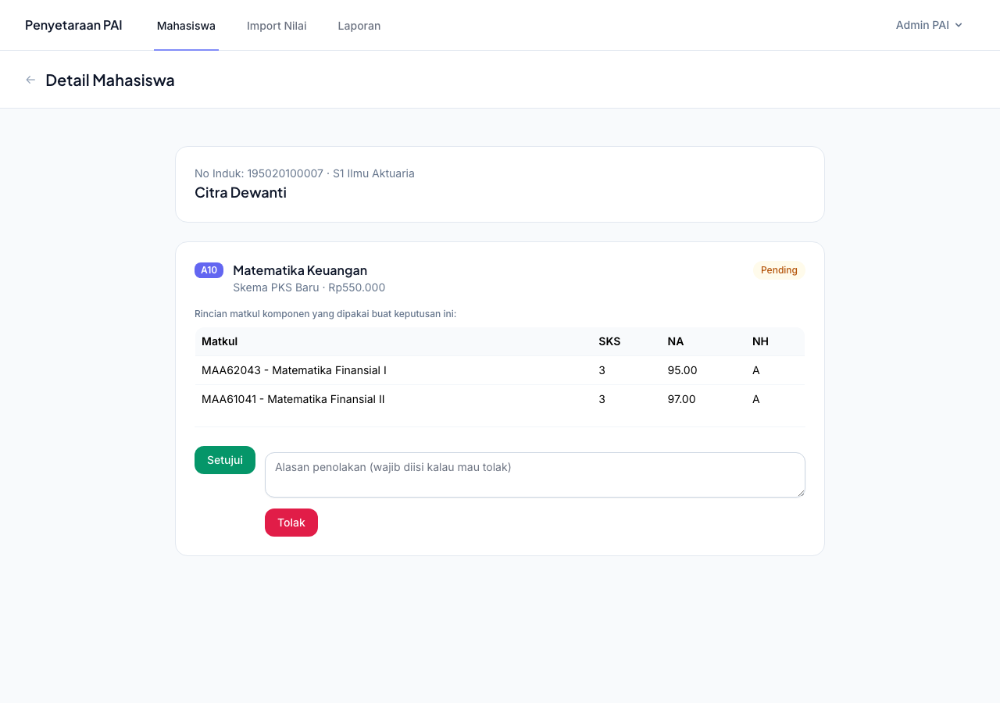
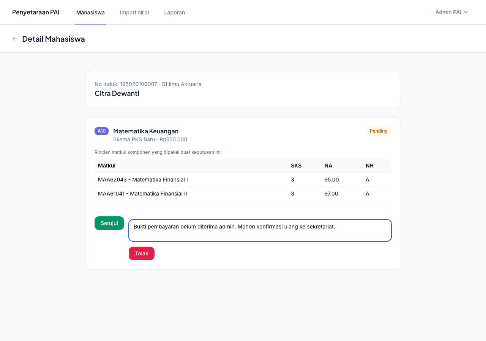
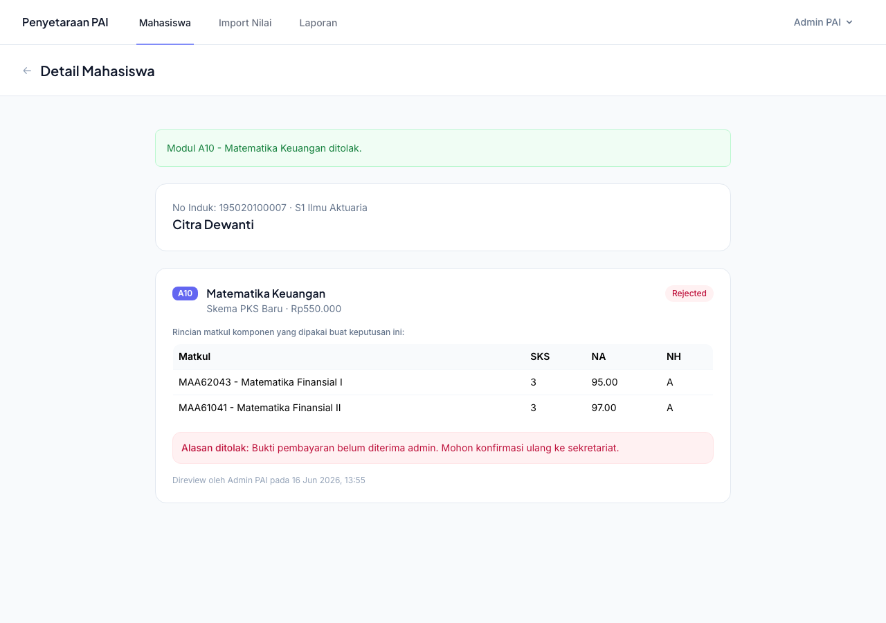
Begitu admin menekan Setujui atau Tolak, sistem mengirim email ke alamat yang Anda
daftarkan. Kalau disetujui, email itu juga melampirkan
Formulir Permohonan Penyetaraan Ujian (file .docx)
dan tombol langsung ke halaman upload — lihat langkah berikutnya.
Berikut contoh isi email untuk masing-masing hasil:
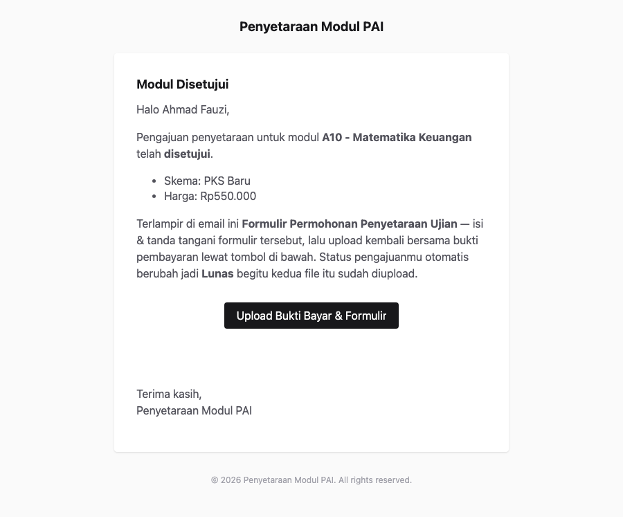
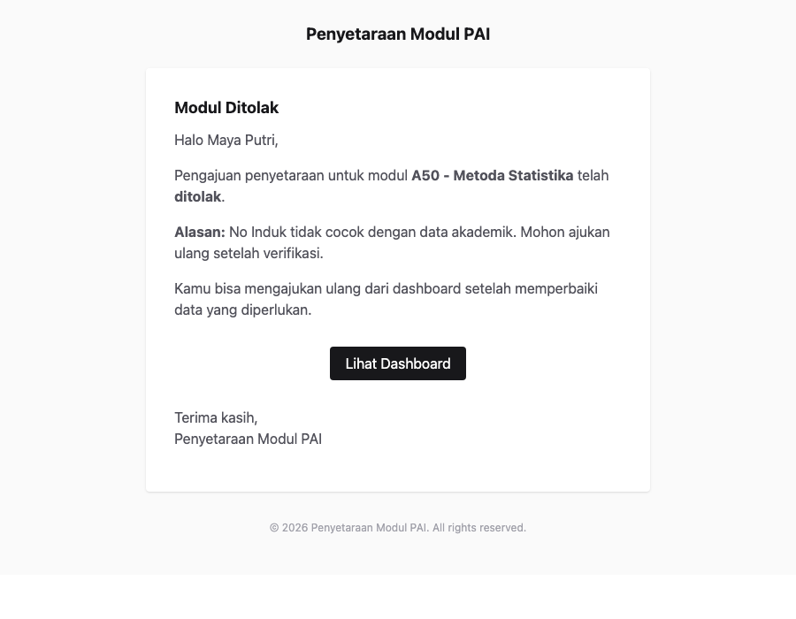
Begitu modul Anda disetujui, masih ada satu langkah terakhir sebelum benar-benar selesai: upload bukti pembayaran dan formulir permohonan penyetaraan ujian yang sudah diisi & ditandatangani (formulirnya ada di lampiran email persetujuan — lihat langkah sebelumnya).
Selama belum lunas, badge kartu modul masih "Disetujui" tapi tombolnya aktif untuk upload (bukan tombol mati seperti modul yang sudah lunas).
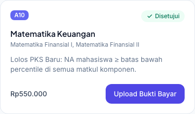
Klik tombol itu (atau tombol di email) untuk membuka halaman upload. Ada 2 slot file terpisah — boleh diisi satu-satu atau sekaligus, dan boleh diganti lagi kapan saja kalau salah upload.
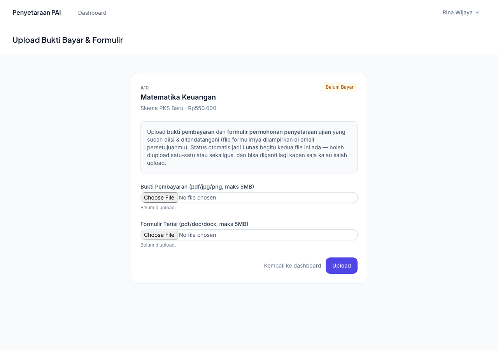
Contoh: upload bukti pembayaran dulu. Slot itu langsung menampilkan link "lihat file", tapi badge status di kanan atas masih "Belum Bayar" selama formulirnya belum diupload juga.
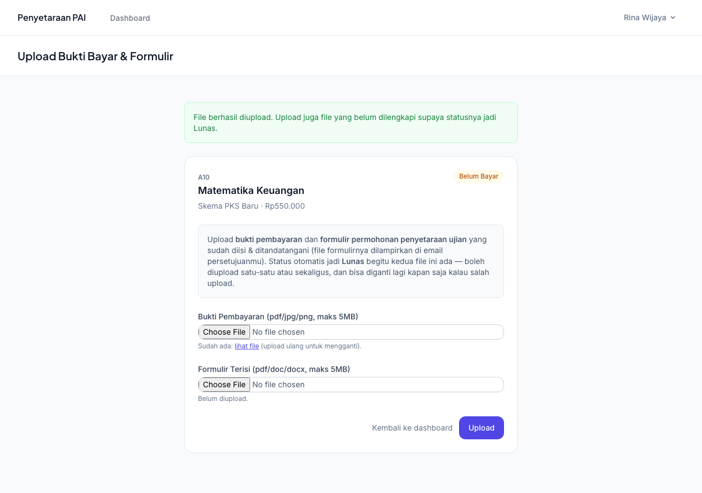
Begitu file kedua (formulir) ikut diupload, sistem otomatis mengubah status jadi Lunas — tanpa perlu menunggu admin mengonfirmasi apapun lagi.
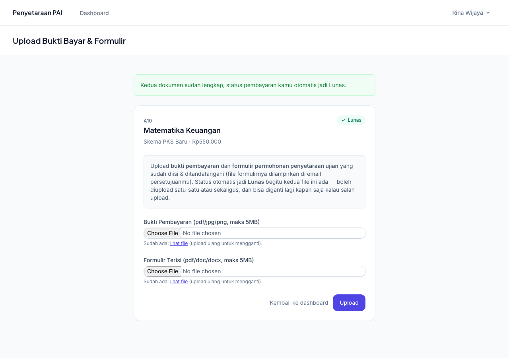
Balik ke dashboard, badge kartu modul itu sekarang "Lunas" dan tombolnya terkunci — proses penyetaraan modul ini sudah benar-benar selesai.
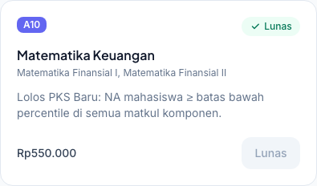
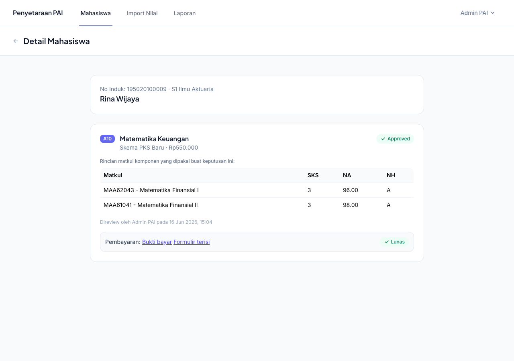
Status di dashboard Anda berubah jadi Disetujui, lalu lanjut upload bukti bayar & formulir (langkah 7 di atas) supaya statusnya jadi Lunas — itu langkah terakhirnya.
Baca alasan penolakan yang ditulis admin (tampil di dashboard & email). Apabila Anda masih dinyatakan eligible, tombol di kartu modul berubah jadi "Ajukan ulang" — klik untuk membuka kembali form pengajuan dan mengirim ulang setelah masalahnya selesai.